기계설계산업기사 (2013-03-10 기출문제)
1과목: 기계가공법 및 안전관리
1. 연삭숫돌의 자생작용이 잘되지 않아 입자가 납작해져서 날이 둔화되는 무딤 현상은?
- 글레이징(glazing)
- 로딩(loading)
- 드레싱(dressing)
- 트루잉(truing)
(정답률: 72%)

2. 3침법이란 수나사의 무엇을 측정하는 방법인가?
- 골지름
- 피치
- 유효지름
- 바깥지름
(정답률: 83%)
3. 초경합금 공구에 내마모성과 내열성을 향상시키기 위하여 피복하는 재질이 아닌 것은?
- TiC
- TiAl
- TiN
- TiCN
(정답률: 67%)
4. 광물섬유를 화학적으로 처리하여 원액에 80%정도의 물을 혼합하여 사용하며, 점성이 낮고 비열과 냉각효과가 큰 절삭유는?
- 지방질 유
- 광유
- 유화유
- 수용성 절삭유
(정답률: 77%)
5. 다음 중 선반의 규격을 가장 잘 나타낸 것은?
- 선반의 총 중량과 원동기의 마력
- 깎을 수 있는 일감의 최대지름
- 선반의 높이와 베드의 길이
- 주축대의 구조와 베드의 길이
(정답률: 59%)
6. 밀링 작업에서 스핀들의 앞면에 있는 24 구멍의 직접 분할판을 사용하여 분할하며 이 때 웜을 아래로 내려 스핀들의 웜 휠과 물림을 끊는 분할법은?
- 간접 분할법
- 직접 분할법
- 차동 분할법
- 단식 분할법
(정답률: 73%)
7. +4μm의 오차가 있는 호칭치수 30mm의 게이지 블록과 다이얼게이지를 사용하여 비교 측정한 결과 30.274mm를 얻었다면 실제치수는?
- 30.278mm
- 30.270mm
- 30.266mm
- 20.282mm
(정답률: 49%)
8. 작업장에서 무거운 짐을 들고 운반 작업을 할 때의 설명으로 부적합한 것은?
- 짐은 가급적 몸 가까이 가져온다.
- 가능한 상체를 곧게 세우고 등을 반듯이 하여 들어 올린다.
- 짐을 들어 올릴 때 충격이 없어야 한다.
- 짐은 무릎을 굽힌 자세에서 들고 편 자세에서 내려 놓는다.
(정답률: 81%)
9. 구성인선(built up edge) 방지대책으로 잘못된 것은?
- 이송량을 감소시키고 절삭 깊이를 깊게 한다.
- 공구경사각을 크게 주고 고속절삭을 실시한다.
- 세라믹 공구(ceramic tool)를 사용하는 것이 좋다.
- 공구면의 마찰계수를 감소시켜 칩의 흐름을 원활하게 한다.
(정답률: 74%)
10. 다음 수기가공 시 작업안전 수칙에 맞는 것은?
- 드라이버의 날 끝은 뾰족한 것이어야 하며, 이가 빠지거나 동그랗게 된 것은 사용하지 않는다.
- 정을 잡은 손은 힘을 주고 처음에는 가볍게 때리고 점차 힘을 가하도록 한다.
- 스패너는 가급적 손잡이가 짧은 것을 사용하는 것이 좋으며, 스패너의 자루에 파이프 등을 연결하여 사용하는 것이 좋다.
- 톱날은 틀에 끼워 두세 번 사용한 후 다시 조정을 하고 절단한다.
(정답률: 47%)
11. 전기도금과 반대 현상을 이용한 가공으로 알루미늄 소재등 거울과 같이 광택 있는 가공 면을 비교적 쉽게 가공할 수 있는 것은?
- 방전가공
- 전해연마
- 액체호닝
- 레이저가공
(정답률: 69%)
12. 니이컬럼형 밀링머신에서 테이블의 상하 이동거리가 400mm이고, 새들의 전후 이동거리는 200mm라면 호칭번호는 몇 번에 해당하는가? (단, 테이블의 좌우 이동거리는 550mm이다.)
- 1번
- 2번
- 3번
- 4번
(정답률: 44%)
13. 다음 중 기어를 절삭하는 공작기계는?
- 호빙 머신
- CNC 선반
- 지그 그라인딩 머신
- 래핑 머신
(정답률: 79%)
14. 수퍼 피니싱(super finishing)의 특징과 거리가 먼 것은?
- 진폭이 수 mm이고 진동수가 매분 수백에서 수천의 값을 가진다.
- 가공열의 발생이 적고 가공 변질층도 작으므로 가공면 특성이 양호하다.
- 다듬질 표면은 마찰계수가 적고, 내마멸성, 내식성이 우수하다.
- 입도가 비교적 크고, 경한 숫돌에 고압으로 가압하여 연마하는 방법이다.
(정답률: 67%)
15. 주축이 수평이며, 컬럼, 니이, 테이블 및 오버 암 등으로 되어 있고 새들위에 선회대가 있어 테이블을 수평면내에서 임의의 각도로 회전할 수 있는 밀링 머신은?
- 모방밀링머신
- 만능밀링머신
- 나사밀링머신
- 수직밀링머신
(정답률: 80%)
16. 선반 작업에서 공구 절인의 선단에서 바이트 밑면에 평행한 수평면과 경사면이 형성하는 각도는?
- 여유각
- 측면 절인각
- 측면 여유각
- 경사각
(정답률: 64%)
17. 투영기에 의해 측정을 할 수 있는 것은?
- 진원도 측정
- 진직도 측정
- 각도 측정
- 원주 흔들림 측정
(정답률: 62%)
18. 드릴 작업에서 너트나 볼트 머리에 접하는 면을 편평하게 하여 그 자리를 만드는 작업은?
- 카운터 싱킹
- 스폿 페이싱
- 태핑
- 리밍
(정답률: 76%)
19. 나사의 피치나 나사산의 반각과 유효지름 등을 광학적으로 쉽게 측정할 수 있는 것은?
- 공구현미경
- 오토콜리메이터
- 촉침식 측정기
- 옵티컬 플랫
(정답률: 44%)
20. 다음 센터리스 연삭기의 장·단점에 대한 설명 중 틀린것은?
- 센터가 필요하지 않아 센터 구멍을 가공할 필요가 없고, 속이 빈 가공물을 연삭할 때 편리하다.
- 긴 홈이 있는 가공물이나 대형 또는 중량물의 연삭이 가능하다.
- 연삭숫돌 폭보다 넓은 가공물을 플랜지 컷 방식으로 연삭 할 수 없다.
- 연삭숫돌의 폭이 크므로, 연삭숫돌 지름의 마멸이 적고 수명이 길다.
(정답률: 76%)
2과목: 기계제도
21. 베어링 호칭 번호가 6301인 구름베어링의 안지름은 몇 mm인가?
- 5
- 10
- 12
- 15
(정답률: 78%)
22. 축의 치수가
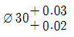
이고, 구멍의 치수가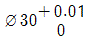
일 때 어떤 끼워 맞춤인가?- 중간 끼워맞춤
- 헐거운 끼워맞춤
- 보통 끼워맞춤
- 억지 끼워맞춤
(정답률: 62%)
23. 냉간 성형 리벳의 호칭 표시가 다음과 같이 호칭된 경우 “40”의 뜻은?
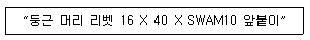
- 리벳의 종류
- 리벳의 재질
- 리벳의 지름
- 리벳의 길이
(정답률: 73%)
24. 그림과 같은 등각투상도를 제 3각법으로 투상하였을 때 가장 적합한 것은?
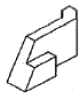
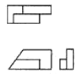
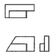
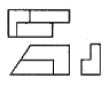
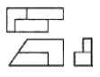
(정답률: 77%)
25. “용접할 부분이 화살표의 반대쪽인 필릿 용접”이라는 의미로 도시된 것은?
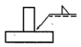
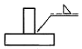
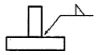
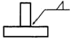
(정답률: 74%)
26. 다음 중 광명단을 발라 실형을 뜨는 스케치법은?
- 프린트법
- 본뜨기법
- 사진 촬영법
- 프리핸드법
(정답률: 59%)
27. 다음 중 죔새가 가장 큰 억지 끼워 맞춤은?
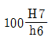
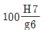
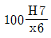
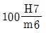
(정답률: 77%)
28. 다음 그림에서 “A"에 가장 적합한 기하공차 기호는?
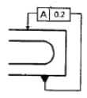
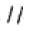
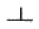
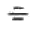
(정답률: 77%)
29. 끼워 맞춤에서 구멍이
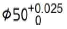
축은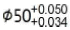
일 때 최소 죔새는?- 0.009
- 0.034
- 0.⑤9
- 0.075
(정답률: 74%)
30. 치수 수치를 기입할 공간이 부족하여 인출선을 이용하는 방법으로 가장 올바른 것은?
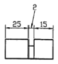
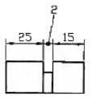
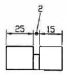
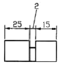
(정답률: 57%)
31. 제3각법에 대한 설명으로 틀린 것은?
- 눈 → 투상면 → 물체의 순으로 나타난다.
- 좌측면도는 정면도의 좌측에 그린다.
- 저면도는 우측면도의 아래에 그린다.
- 배면도는 우측면도의 우측에 그린다.
(정답률: 70%)
32. 판금이나 제관 전개 작업에서 주로 나타나는 상관선에 대한 설명으로 가장 적합한 것은?
- 두 개의 직선이 교차하는 선
- 두 점 사이를 연결하는 선
- 곡면과 곡면 또는 곡면과 평면이 만나는 선
- 두 곡선 사이의 중심을 이루는 선
(정답률: 65%)
33. KS 재료기호에서 “SM 40C"의 재료명은?
- 고속도 공구강 강재
- 기계구조용 탄소 강재
- 가단주철
- 용접구조용 압연 강재
(정답률: 86%)
34. 그림과 같은 표면 거칠기 지시기호에서 λc2.5 의 값은 어떤 값을 의미하는 가?
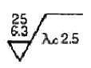
- 컷 오프 값
- 거칠기 지시 값 상한값
- 최대높이 거칠기 값
- 거칠기 지시 값 하한값
(정답률: 82%)
35. 그림과 같은 I 형 형강의 표시방법으로 옳은 것은?
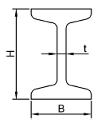
- I B x H - t - L
- I B x H x t - L
- I H x B - t - L
- I H x B x t - L
(정답률: 73%)
36. 그림과 같이 제 3각법으로 나타낸 정면도와 평면도에 가장 적합한 우측면도는?
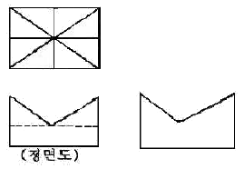
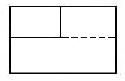
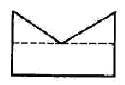
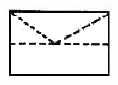
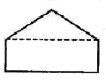
(정답률: 77%)
37. 제 3각법으로 나타낸 그림과 같은 정투상도에 해당하는 입체도는?
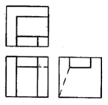
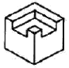
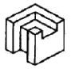
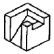
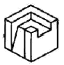
(정답률: 82%)
38. 표준 스퍼기어의 항목표에서는 기입되지 아니하나 헬리컬기어 항목표에는 기입되는 것은?
- 모듈
- 비틀림 각
- 잇수
- 기준 피치원 지름
(정답률: 78%)
39. 다음 도면에서 센터의 길이 ℓ로 푯시된 부분의 길이는? (단, 테이퍼는 1/20 이고 단위는 mm 임)
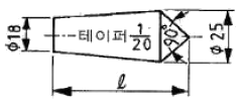
- 50
- 82.5
- 140
- 152.5
(정답률: 40%)
40. 그림과 같은 입체도의 제3각 투상도로 가장 적합한 것은? (단, 화살표 방향을 정면으로 한다.)
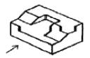
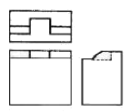
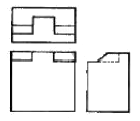
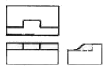
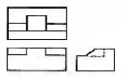
(정답률: 54%)
3과목: 기계설계 및 기계재료
41. 담금질 조직 중에 냉각속도가 가장 빠를 때 나타나는 조직은?
- 솔바이트
- 마텐자이트
- 오스테나이트
- 트루스타이트
(정답률: 74%)
42. 연성이 큰 것으로부터 순서대로 되어 있는 것은?
- Al → Cu → Ag → Zn → Ni
- Fe → Pb → Cu → Ag → Pt
- Au → Cu → Pb → Zn → Fe
- Al → Fe → Ni → Cu → Zn
(정답률: 50%)
43. 다음 중 두랄루민 합금과 관계없는 것은?
- Al-Cu-Mg-Mn 계 합금이다.
- 시효경화 처리하면 인장강도가 연강과 같은 정도가 된다.
- 가볍고 강인하여 단조용으로 사용된다.
- Y-합금이라고도 한다.
(정답률: 69%)
44. 다음 중 절삭 공구용 특수강은?
- Ni-Cr강
- 불변강
- 내열강
- 고속도강
(정답률: 76%)
45. 주철의 마우러 조직도를 바르게 설명한 것은?
- Si와 Mn량에 따른 주철의 조직 관계를 표시한 것이다.
- C와 Si량에 따른 주철의 조직 관계를 표시한 것이다.
- 탄소와 흑연량에 따른 주철의 조직 관계를 표시한 것이다.
- 탄소와 Fe3C량에 따른 주철의 조직 관계를 표시한 것이다
(정답률: 59%)
46. 냉간 가공한 재료를 풀림 처리 시 나타나는 현상으로 틀린것은?
- 회복
- 재결정
- 결정립 성장
- 응고
(정답률: 57%)
47. 알루미늄(Al) 합금의 특징을 잘못 설명한 것은?
- 가볍고 전연성이 좋아 성형가공이 용이하다.
- 우수한 전기 및 열의 양도체이다.
- 용융점이 1083°C로 고온가공성이 높다.
- 대기 중에서는 일반적으로 내식성이 양호하다.
(정답률: 67%)
48. 공작기계 및 자동차 등에 사용되는 소결 마찰 부품의 구비 조건으로 맞지 않은 것은?
- 내마모성, 내열성이 낮을 것
- 마찰계수가 크고 안정될 것
- 가격이 저렴할 것
- 열전도성, 내유성이 좋을 것
(정답률: 54%)
49. 형상기억합금의 내용과 관계가 먼 것은?
- 형상기억 효과를 나타내는 합금은 오스테나이트 변태를 한다.
- 어떠한 모양을 기억할 수 있는 합금이다.
- 소성변형된 것이 특정 온도 이상으로 가열하면 변형되기 이전의 원래 상태로 돌아가는 합금이다.
- 형상기억합금의 대표적인 합금은 Ni-Ti합금이다.
(정답률: 65%)
50. 탄소 공구강 및 일반 공구재료의 구비 조건으로 틀린 것은?
- 내마모성이 클 것
- 강인성 및 내충격성이 우수할 것
- 가공이 어려울 것
- 가격이 저렴할 것
(정답률: 81%)
51. 지름이 50mm 이고 길이가 100mm인 저널 베어링에서 5.9kN의 하중을 지탱하고 있을 때 저널면에 작용하는 압력은 약 몇 MPa인가?
- 0.21
- 0.59
- 1.18
- 1.65
(정답률: 53%)
52. 드럼의 지름 500mm인 브레이크 드럼축에 98.1N·m의 토크가 작용하고 있는 블록 브레이크에서 블록을 브레이크 바퀴에 밀어 붙이는 힘은 약 몇 kN인가? (단, 접촉부 마찰계수는 0.2이다.)
- 0.54
- 0.98
- 1.51
- 1.96
(정답률: 32%)
53. 다음 중 나사의 효율에 관한 식으로 맞는 것은?
- 나사의효율 = 마찰이없는경우회전력 / 마찰이있는경우회전력
- 나사의효율 = 마찰이있는경우회전력 / 마찰이없는경우회전력
- 나사의효율 = 나사의 리드 / 나사의 피치
- 나사의효율 = 나사의 피치 / 나사의 리드
(정답률: 47%)
54. 용접 이음의 장점에 해당하지 않는 것은?
- 열에 의한 잔류응력이 거의 발생하지 않는다.
- 공정수를 줄일 수 있고, 제작비가 싼 편이다.
- 기밀 및 수밀성이 양호하다.
- 작업의 자동화가 용이하다.
(정답률: 69%)
55. 다음 중 두 축의 상대위치가 평행할 때 사용되는 기어는?
- 베벨 기어
- 나사 기어
- 웜과 웜기어
- 래크와 피니언
(정답률: 60%)
56. 하중이 4kN 작용하였을 때 처짐이 100mm 발생하는 코일 스프링의 소선 지름은 20mm이다. 이 스프링의 유효 감김수는 약 몇 권인가? (단, 스프링 지수(∁)는 10이고, 스프링 선재의 전단탄성계수는 80GPa이다.)
- 3
- 4
- 5
- 6
(정답률: 37%)
57. 평벨트 풀리의 지름이 600mm, 축의 지름이 50mm라 하고, 풀리를 폭(b) x 높이(h) = 8mm x 7mm의 묻힘키로 축에 고정하고 벨트 장력에 의해 풀리의 외주에 2kN의 힘이 작용한다면, 키의 길이는 몇 mm 이상이어야 하는가? (단, 키의 허용전단응력은 50 MPa로 하고, 전단 응력만을 고려하여 계산한다.)
- 50
- 60
- 70
- 80
(정답률: 45%)
58. 다음 중 동력의 단위에 해당하지 않는 것은?
- erg/s
- N∙m
- PS
- J/s
(정답률: 54%)
59. 전동축에 큰 휨(deflection)을 주어서 축의 방향을 자유롭게 바꾸거나 충격을 완화시키기 위해 사용하는 축은?
- 직선 축
- 크랭크 축
- 플렉시블 축
- 중공 축
(정답률: 66%)
60. 벨트 전동에서 긴장측의 장력 T1 과 이완측의 장력 T2 사이의 관계식으로 옳은 것은? (단, 원심력은 무시하고 μ는 접촉부 마찰계수, θ 는 벨트와 풀리의 접촉각[rad]이다.)
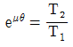
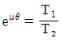
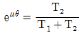
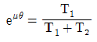
(정답률: 45%)
4과목: 컴퓨터응용설계
61. 다음 행렬의 계산은 어떤 변환을 의미하는가?
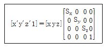
- 이동 변환
- 크기 변환
- 회전 변환
- 전단 변환
(정답률: 53%)
62. 솔리드 모델의 CSG 표현 방식에 대한 설명으로 거리가 먼 것은?
- 기본 입체의 조합으로 물체를 표현한다.
- 불 연산(Boolean operation)을 이용한다.
- B-rep 표현방식에 대비하여 전개도 작성이 쉽다.
- 중량계산을 할 수 있다.
(정답률: 61%)
63. 2차원 평면에서 두 개의 점이 정의되었을 때 이 두 점을 포함하는 원은 몇 개 정의할 수 있는가?
- 1개
- 2개
- 3개
- 무수히 많다.
(정답률: 76%)
64. 다음 중 원추 단면 곡선에 해당하지 않는 것은?
- 포물선
- 스플라인곡선
- 타원
- 원
(정답률: 72%)
65. 양궁 과녁과 같이 일정 간격을 가진 여러 개의 동심원으로 구성되는 형상을 만들려고 한다. 다음 중 가장 적절하게 사용될 수 있는 기능은?
- zoom
- move
- offset
- trim
(정답률: 86%)
66. 다음 중 베지어 곡면의 특징이 아닌 것은?
- 곡면을 부분적으로 수정할 수 있다.
- 곡면의 코너와 코너 조정점이 일치한다.
- 곡면이 조정점들의 불록포(convex hull)내부에 포함된다.
- 곡면이 일반적인 조정점의 형상에 따른다.
(정답률: 62%)
67. 설계해석 프로그램의 결과에 따라 응력, 온도 등의 분포도나 변형도를 작성하거나, CAD 시스템으로 만들어진 형상 모델을 바탕으로 NC공작기계의 가공 data를 생성하는 소프트웨어 프로그램이나 절차를 뜻하는 것은 무엇인가?
- Pre-processor
- Post-processor
- Multi-processor
- Co-processor
(정답률: 70%)
68. x2+y2-25인 원이 있다. 원 상의 점 (3,4)에서 접선의 방정식으로 옳은 것은?
- 3x+4y-25=0
- 3x+4y-50=0
- 4x+3y-25=0
- 4x+3y-50=0
(정답률: 60%)
69. 그림과 같이 실린더 형상에 빼기구배(draft angle)를 주기 위해 실린더 곡면을 변형시키는 모델링 기법으로 옳은 것은?
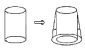
- 스키닝(skinning)
- 리프팅(lifting)
- 스위핑(sweeping)
- 트위킹(tweaking)
(정답률: 62%)
70. CAD에서 곡선을 표현하기 위한 방법 중 고전적인 보간법과 관계가 먼 것은?
- 선형보간
- 3차 스플라인 보간
- Lagrange 다항식에 의한 보간
- Bernstein 다항식에 의한 보간
(정답률: 50%)
71. 전자발광형 디스플레이 장치(혹은 EL 패널)에 대한 설명으로 틀린 것은?
- 스스로 빛을 내는 성질을 가지고 있다.
- 백라이트를 사용하여 보다 선명한 화질을 구현한다.
- TFT-LCD 보다 시야각에 제한이 없다.
- 응답시간이 빨리 고화질 영상을 자연스럽게 처리할 수 있다.
(정답률: 63%)
72. 기하학적인 도형의 표현방법 중 가장 기본적인 형태로서 점과 선만을 이용하여 화면에 표현하는 방식은?
- wire frame modeling 방식
- solid modeling 방식
- Boundary modeling 방식
- finite modeling 방식
(정답률: 82%)
73. 그림과 같이 여러 개의 단면형상을 생성하고 이들을 덮어싸는 곡면을 생성하였다. 이는 어떤 모델링 방법인가?
- 스위핑
- 리프팅
- 블랜딩
- 스키닝
(정답률: 56%)
74. 평면에서 x축과 이루는 각도가 150°이며 원점으로부터 거리가 1인 직선의 방정식은?
- √3x+y=2
- √3x+y=1
- x+√3y=2
- x+√3y=1
(정답률: 31%)
75. 플로터 형식에 있어서 펜(pen)식과 래스터(raster)식으로 구분할 때 다음 중 펜식 플로터에 속하는 것은?
- 정전식
- 잉크제트식
- 리니어 모터식
- 열전사식
(정답률: 55%)
76. 곡면을 모델링하는 방식 중 4개의 경계곡선을 선형 보간하여 형성되는 곡면은 무엇인가?
- 로프트(Loft) 곡면
- 쿤스(Coons) 곡면
- 스윕(Sweep) 곡면
- 회전(Revolve) 곡면
(정답률: 78%)
77. CAD/CAM 시스템의 자료를 교환하는 표준규격에 해당되지 않는 것은?
- STEP
- DXF
- XLS
- IGES
(정답률: 79%)
78. 3차원 솔리드 모델링을 구성하는 요소 중에서 프리미티브(Primitive)라고 볼 수 없는 것은?
- 에지(edge)
- 원기둥(cylinder)
- 콘(cone)
- 구(sphere)
(정답률: 70%)
79. 2차원 공간을 동차 좌표계의 변환행렬식으로 변환하고자할 때 그 행렬의 크기는?
- 2 x 2
- 2 x 3
- 3 x 2
- 3 x 3
(정답률: 65%)
80. CAD 소프트웨어의 도입효과로 가장 거리가 먼 것은?
- 제품 개발기간 단축
- 설계 생산성 향상
- 업무 표준화 촉진
- 부서간 의사 소통 최소화
(정답률: 83%)